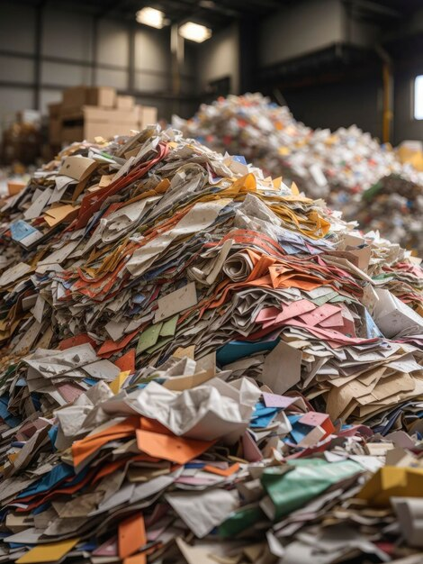
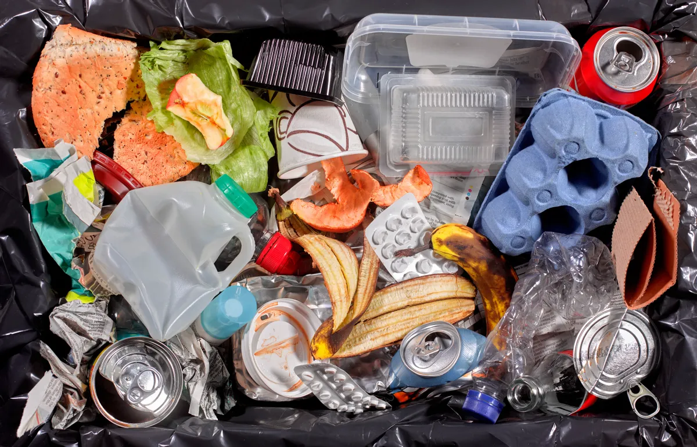

指除可回收物、有害垃圾、湿垃圾以外的其他生活废弃物。这类垃圾不会腐烂，危害大多较小，但无再次利用价值。
Refers to household waste that does not fall into the categories of recyclables, hazardous waste, or kitchen waste. This type of waste does not decompose easily, poses minimal harm, and has no further reuse value.
一般采取填埋、焚烧、卫生分解等方法处理，部分还可以使用生物解决，如放蚯蚓等。干垃圾应当投入干垃圾收集容器，并保持周边环境整洁。
Common disposal methods include landfilling, incineration, sanitary decomposition, and, in some cases, biological solutions such as introducing earthworms. Residual waste should be disposed of in designated collection bins, ensuring the surrounding environment remains clean.
餐巾纸、猫砂、污损纸张、干燥剂、污损塑料、尼龙制品、编织袋、防碎气泡膜、毛发、橡皮泥、陶瓷制品、旧毛巾、一次性餐具、镜子、成分复杂的制品等。
Tissues, cat litter, soiled paper, desiccants, contaminated plastics, nylon products, woven bags, bubble wrap, hair, modeling clay, ceramic items, old towels, disposable tableware, mirrors, composite-material products, etc.
上一篇：湿垃圾
下一篇：大件垃圾